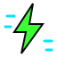

ASSET PACK / ICONS
ICON SET
Sixteen glyphs drawn for TokenGrid. SVG sources at 64px, PNG renders at 512px.

| FILE | FORMAT | SIZE | PURPOSE |
|---|---|---|---|
| icons/icon-agent.svg | SVG | 623 B | CLI AI agent head |
| icons/icon-bar.svg | SVG | 448 B | Omarchy bar widget with live readout |
| icons/icon-bolt.svg | SVG | 393 B | live telemetry / lightning summary |
| icons/icon-budget.svg | SVG | 582 B | per-agent budget cap gauge |
| icons/icon-clock.svg | SVG | 466 B | wrapper duration measurement |
| icons/icon-download.svg | SVG | 552 B | asset pack download glyph |
| icons/icon-ghostty.svg | SVG | 512 B | Ghostty isolation profile |
| icons/icon-grid.svg | SVG | 408 B | 2x2 token grid — plugin identity glyph |
| icons/icon-ledger.svg | SVG | 507 B | SQLite ledger (token_usage + agents) |
| icons/icon-palette.svg | SVG | 522 B | 312-theme chooser palette |
| icons/icon-pipeline.svg | SVG | 772 B | alias -> wrapper -> daemon -> ledger |
| icons/icon-rule.svg | SVG | 478 B | Hyprland Lua window rule braces |
| icons/icon-shield.svg | SVG | 485 B | local-only data (nothing leaves the host) |
| icons/icon-terminal.svg | SVG | 643 B | Rust TUI terminal window |
| icons/icon-token.svg | SVG | 374 B | a single counted token |
| icons/icon-window.svg | SVG | 722 B | 1100x650 floating window rule |


◆ ../pack.json — full manifest · MIT · © Cybercore Tech